Prospect Park West, 1970s
Prospect Park West, 1970s

Studio 54

Some famous people by the Brooklyn Bridge, 1981

Eighth Avenue at 18th Street, Manhattan. Nitty gritty New York City. Photo taken circa 1980 by D Bradford.


42nd Street, 1986

Old folks hanging out in the middle of Broadway (at 73rd St), 1963
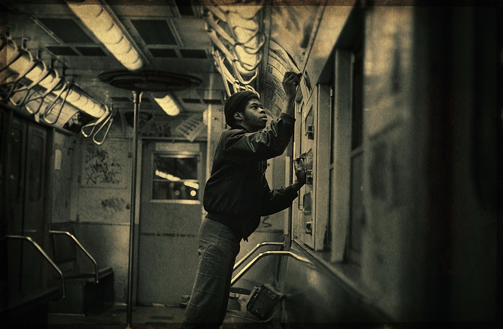
FLIP-ONE!

Who needs pants when you’ve got a boom box?

Andre the Giant

Kell / Futura

W. 115th St in the 60s

Pershing Square, between East 41st & East 42nd Streets, Manhattan. Photo taken in 1978 by Robert Mulero

What a mess.
Lunchtime on the steps of the New York Public Library, Summer 1969.

Peep

Not a single smile.
The Manhattan skyline as seen from the south on the Gowanus Expressway. Photo taken in 1968, from the flickr page of Tom Riggle.
Joey Ramone, 1983
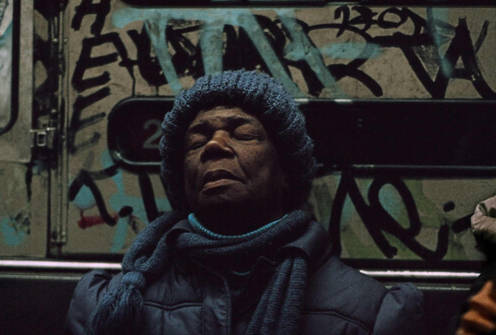
NYC, 1980s
Frank Horvat
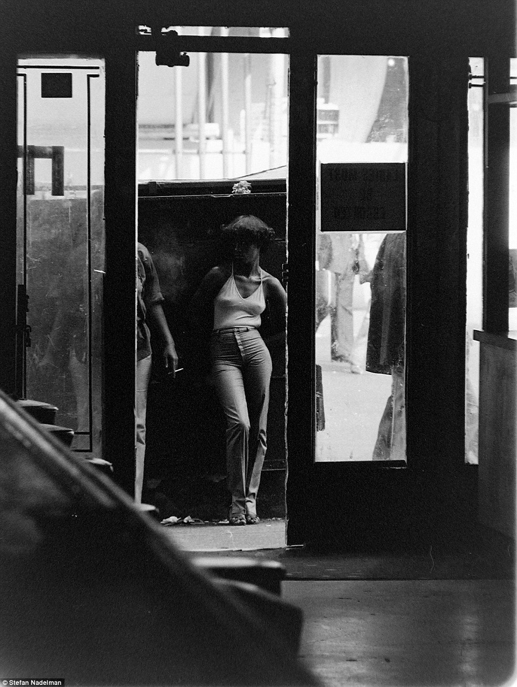
The view from Terminal Bar, 1970s.
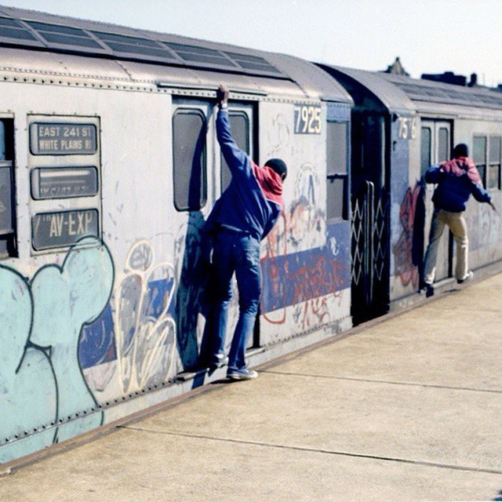
Riding the subway, late 70s
Happy New Year?
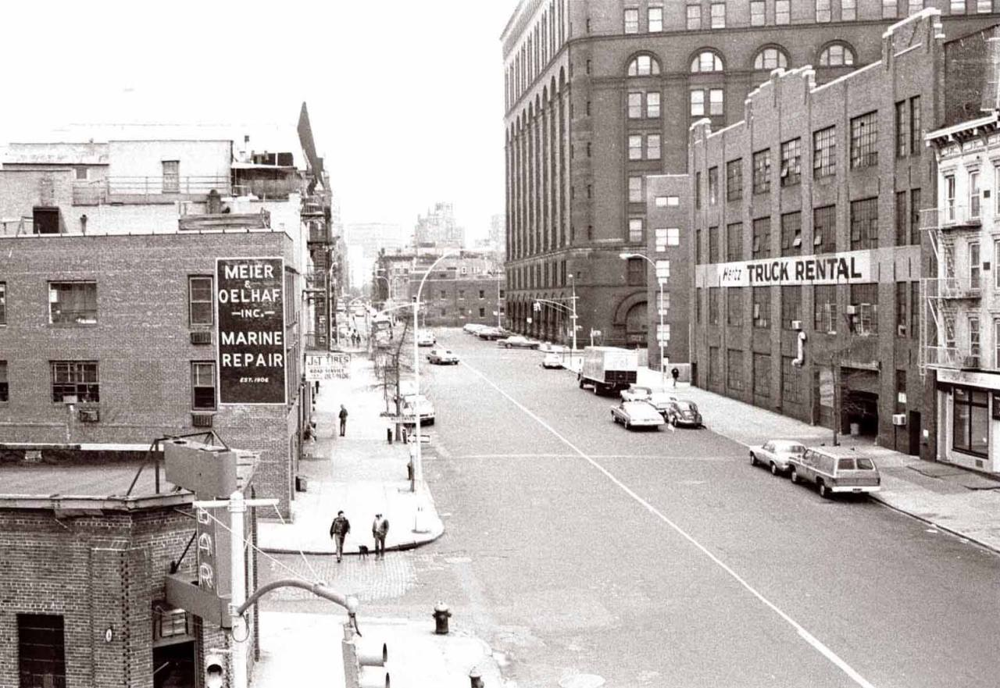
Christopher and West, 1975

East Village, 1989
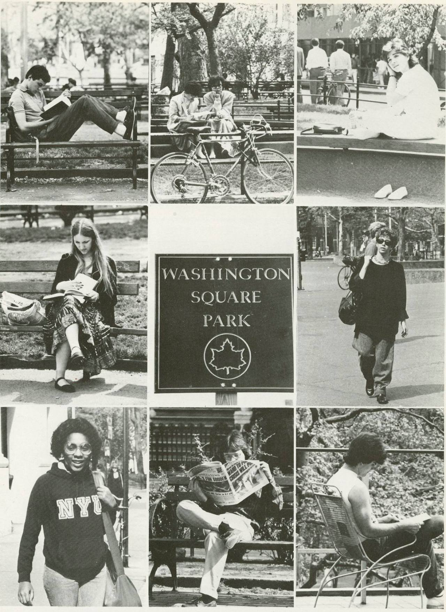
Students studying in Washington Square Park, 1985
Photo courtesy of the NYU Archives
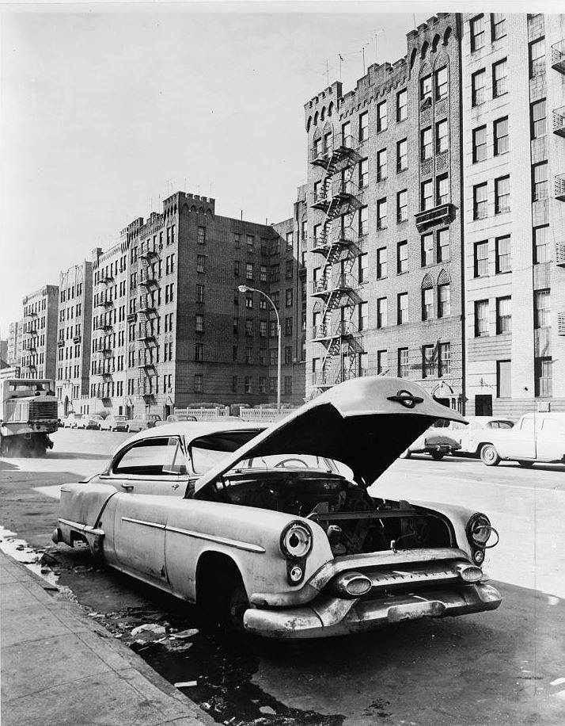
Bronx, 1964
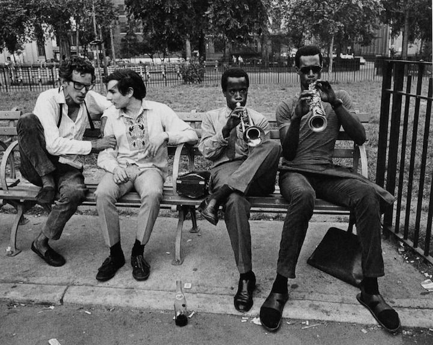
Jammin’
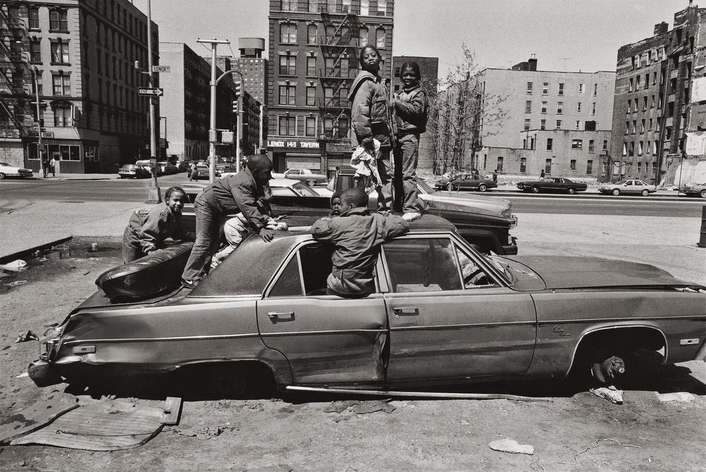
Harlem, 1987*

8th St between B and C, 1983
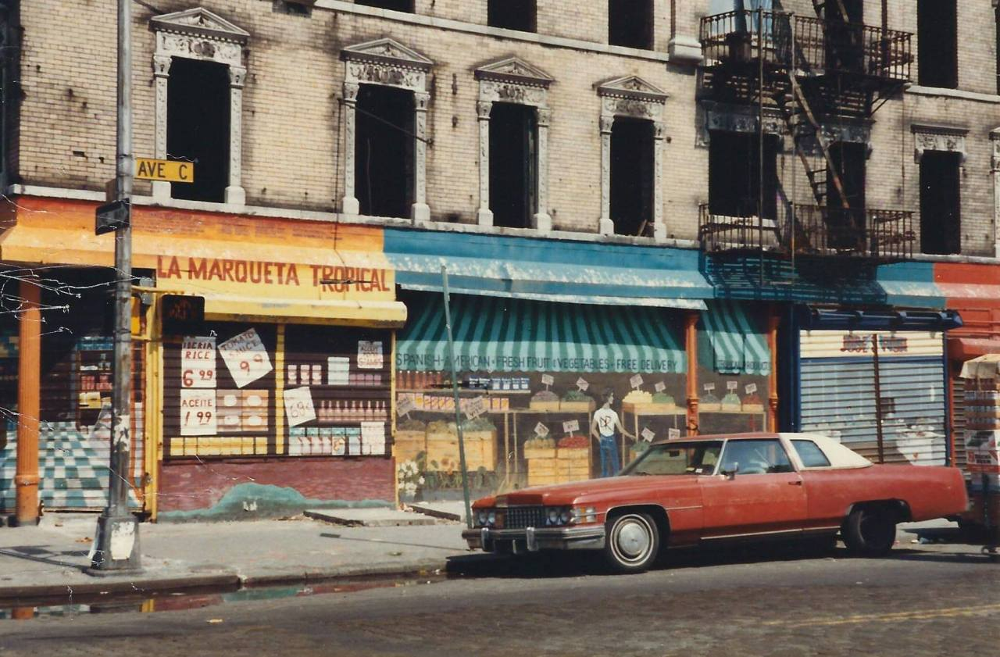
Alphabet City, 1984 (Ave C and 6th St)

Greenwich Village, 1976

Central Park, 1969
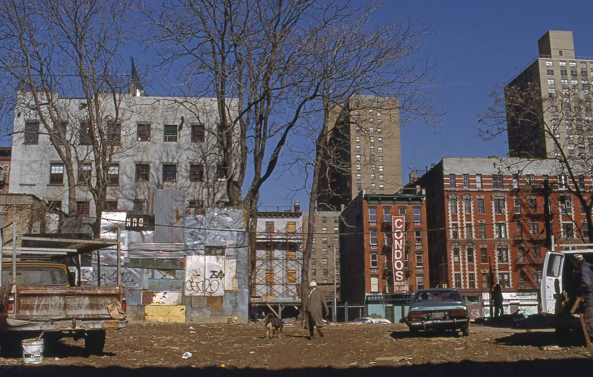
E. Houston St, circa 1986
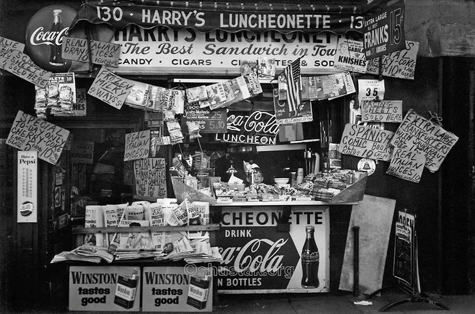
Harry’s Luncheoenette, 1960

4 Train, pulling into the station.
You can leave NYC, but you can’t get it out of your soul.

Nothing to see here. Move along.

James Brown loves the bus!

Alphabet City, 1983
Sweet ride.